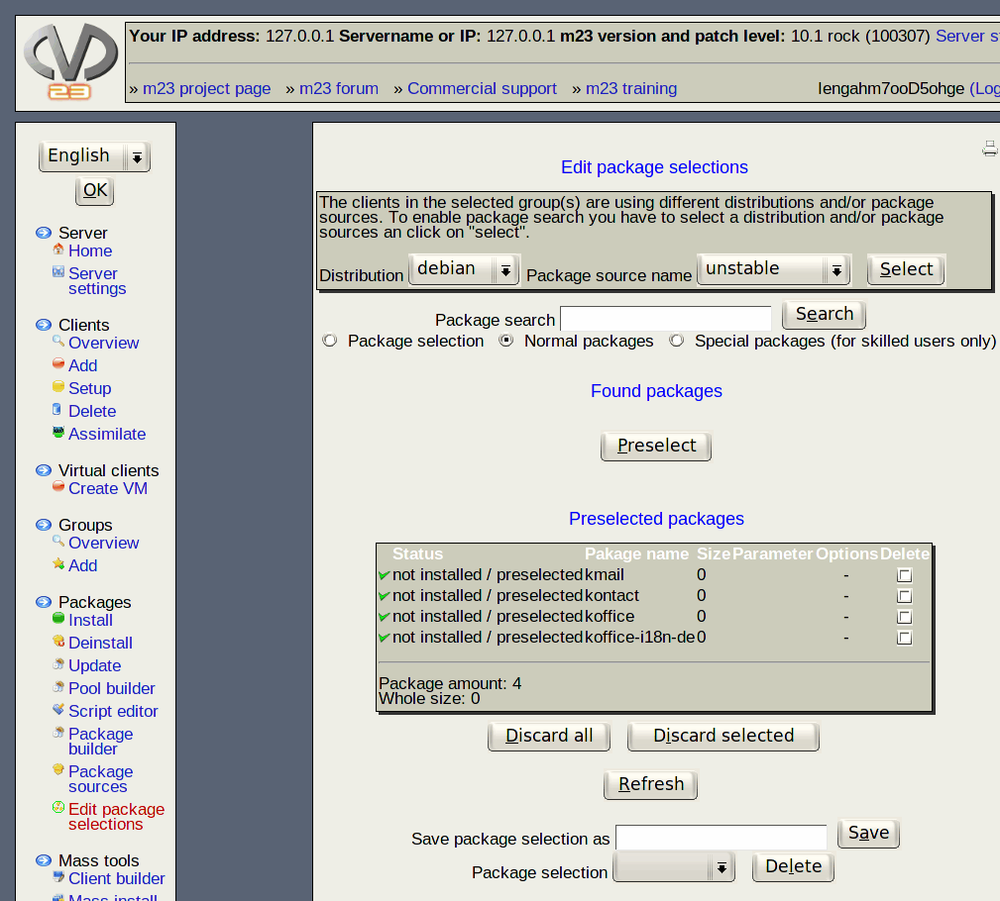

Next:
Step by step
Up:
Packages
Previous:
Hint
Contents
Edit package selections
In this dialog you can edit or delete existing and create new package selections as well as export the selected packages' names into a file or import package names from a file into the list of preselected packages.

Subsections
Step by step
Deletion of selection
Im/Export selected packages
Hint
root 2019-06-03